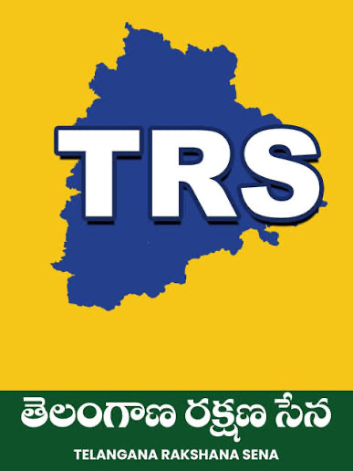

Telangana Rakshana Sena
About Us
Telangana Rakshana Sena (TRS) has an organisational and ideological framework centred on Telangana's self-respect, social justice, welfare, state rights, cultural identity and accountable governance. Telangana-ism is identified as the party's core ideological pillar. The party maintains an NRI Wing as one of its allied wings.

Ideological Framework
Organisational Framework
Relations &
International
Affairs
A Foreign Relations & International Affairs Office (FRIAO) has been proposed within TRS. It would not replace the NRI Wing, and it would not be conceived as a governmental or diplomatic institution.
Its role is described in the source material as:
Its proposed mandate covers international policy research, monitoring international developments relevant to Telangana, engagement with think tanks and universities, international conferences and forums, structured relationships with international institutions, comparative policy research, global economic and technological developments, international communications, leadership briefings, and coordination of international delegations and visits.
Institutional Distinction
NRI Wing & Foreign Relations
NRI Wing
An existing allied wing of TRS.
- Overseas Telangana communities
- Community meetings
- Cultural programmes
- Diaspora communications
- Membership
- Organisational expansion
- Community concerns
Foreign Relations & International Affairs Office
A proposed office.
- International policy
- Country research
- Institutional relationships
- Think tanks and universities
- Global policy forums
- Comparative governance
- Economic and technology developments
- International communications
- Delegation preparation
- Leadership briefing
The NRI Wing would be the community and diaspora network; the Foreign Relations Office would be the policy, research and institutional network.
Strategic Framework
The Report, Section by Section
The proposed Foreign Relations & International Affairs Office is set out in the source strategic-framework document across the following sections.
The political, economic, technological and social environment in which states operate is increasingly international in character.
Questions concerning employment, technology, education, climate change, agriculture, water management, public health, migration, urbanisation, investment, artificial intelligence and higher education are no longer confined to individual jurisdictions.
A political organisation operating in Telangana therefore increasingly encounters international dimensions even when addressing domestic issues.
A student seeking higher education may interact with universities in the United States, United Kingdom, Australia, Europe or elsewhere. A technology entrepreneur may depend upon international capital and global markets. A farmer may be affected indirectly by international commodity markets and climate conditions. A state seeking economic development may study experiences from other countries.
For these reasons, international engagement can no longer be understood solely as a matter of national foreign policy. For a state-focused political organisation, it can also become a matter of knowledge, research, diaspora, technology, education, culture, investment, international best practices, global communications and youth opportunities.
The question examined by this report is whether TRS should possess a professional internal capability to understand, research and engage with the international environment in areas relevant to Telangana and the organisation's policy interests. The proposed office would not replace national diplomatic institutions or perform governmental foreign-policy functions. Its role would be organisational, research-oriented and knowledge-driven.
Telangana is a state within India and also a society with extensive links to the international community. Telangana-origin professionals, students, entrepreneurs, researchers and families live across the world.
These communities create multiple channels through which Telangana interacts with international society: diaspora, education, technology, business, research, culture, professional networks, international civil society and global media.
Without a central coordinating mechanism, international engagement can become fragmented. A Foreign Relations & International Affairs Office would seek to address this organisational gap.
TRS currently lists an NRI Wing among its allied wings. The NRI Wing can appropriately focus on overseas Telangana communities, community meetings, cultural programmes, diaspora communications, membership, organisational expansion and community concerns.
The proposed Foreign Relations Office would focus on international policy, country research, institutional relationships, think tanks, universities, global policy forums, comparative governance, economic and technology developments, international communications, delegation preparation and leadership briefing.
The two structures should therefore operate in coordination. The NRI Wing would be the community and diaspora network; the Foreign Relations Office would be the policy, research and institutional network.
The rationale can be organised around seven institutional needs: information, research, relationships, representation, knowledge transfer, diaspora coordination and institutional memory.
Political leadership requires reliable information about developments beyond the immediate political environment. International experience can provide comparative evidence for policy development. Long-term institutional relationships require continuity. International conferences and forums require preparation. The diaspora can become a source of professional and intellectual expertise. A central office can preserve contacts, reports, country profiles, policy studies, conference records and delegation reports.
The office could have eight principal functions: international research; country and regional desks; Global Telangana and diaspora coordination; think tanks and universities; international institutions; international communications; delegation support; and leadership briefings.
Its research agenda could cover geopolitics, economics, technology, education, agriculture, climate, health, urban development, migration and social policy. It should produce concise, sourced and decision-useful outputs rather than simply accumulate information.
The proposed office should function as a small policy and research institution inside the party rather than as a ceremonial international wing. Its output should be measurable.
Weekly outputs could include an international news brief. Monthly outputs could include country reports and policy papers. Quarterly outputs could include international affairs briefings and diaspora knowledge reports. Annual outputs could include a Telangana Global Report and an International Engagement Report.
The guiding principle should be: research first, relationships second, representation third.
The office could be headed by a Director or Head of Foreign Relations & International Affairs, reporting to party leadership.
Core divisions could include: International Policy Research; Country and Regional Desks; Global Telangana and Diaspora Coordination; International Institutions and Think Tanks; Education, Technology and Innovation; International Communications; and Administration, Data and Compliance.
The initial structure should remain lean and expand only where measurable value is demonstrated.
Country desks should not initially be created for every country. A priority framework could consider the size of the Telangana-origin population, education links, technology links, investment links, trade relevance, research partnerships, strategic relevance, cultural links and frequency of engagement.
Each desk could maintain a country profile, relationship database, policy library and record of previous engagements. The framework should be reviewed periodically rather than treated as permanent.
In cooperation with the NRI Wing, the office could establish a Global Telangana Knowledge Network. It could include professionals and researchers in medicine, engineering, technology, agriculture, finance, law, education, climate, urban planning, public policy, entrepreneurship and science.
Participants could contribute as experts, mentors, researchers, connectors, speakers or advisers. The purpose would be to transform diaspora engagement from a purely organisational network into a knowledge network.
The office should maintain a rolling research agenda. Potential themes include education systems, vocational training, healthcare, digital health, agriculture technology, irrigation, crop insurance, women's economic participation, youth employment, environmental management, water security and climate resilience.
Research should identify both successful and unsuccessful international experiences and assess their relevance to Telangana rather than assuming that foreign models can simply be transplanted.
Technology should be a major component of the office. It could monitor artificial intelligence, semiconductors, cybersecurity, biotechnology, digital government, agricultural technology, educational technology, healthcare technology and renewable energy.
An international education network could maintain information on universities, scholarships, research programmes, exchanges and fellowships. A monthly Global Education Bulletin could communicate verified opportunities.
The office should develop institutional relationships with universities, research centres, public-policy institutions, economic institutes and technology institutions.
Possible activities include academic seminars, research exchanges, policy roundtables, visiting scholar programmes, student programmes and comparative research projects.
Every relationship should be documented: institution, contact, subject, engagement, outcome and follow-up.
International conferences should be approached strategically. Before attending, the office should identify the purpose, participants, knowledge requirements, relationship objectives and expected contribution. After attending, it should produce a written outcome report.
Any delegation proposal should include purpose, country, institutions, participants, estimated cost, meetings, expected outcomes, legal/compliance review and post-visit deliverables. Delegations should be evaluated by institutional value rather than visibility alone.
The office could maintain an international communications function responsible for English-language policy briefs, international press monitoring, fact sheets, global newsletters, website material and research publications.
The objective should be accurate communication rather than propaganda. International media monitoring should identify coverage of Telangana, economic developments, diaspora stories, technology and policy developments.
A signature monthly publication could be titled Telangana & The World. Sections could include global developments relevant to Telangana, international technology, agriculture, education, healthcare, climate, Global Telangana, international opportunities, research of the month and upcoming international events.
Over time, this publication could become an institutional knowledge product and a record of how the office interprets global developments relevant to Telangana.
The office should create a secure central database covering people, institutions, countries and engagements. Categories could include academics, researchers, professionals, universities, think tanks, international organisations, country profiles, meetings, conferences, visits and follow-up actions.
A simple before-during-after system should be standard: briefing note before engagement, meeting record during/after engagement, outcome report and follow-up tracker.
The office could support international youth and women's networks through fellowships, mentorship, research programmes and policy forums. It could also conduct comparative research on representation, social mobility, education access, gender equality, minority inclusion and disability inclusion.
These programmes should focus on education, knowledge exchange and institutional learning rather than merely organisational recruitment.
Agriculture and environmental issues have strong international knowledge dimensions. The office could track irrigation, drought resilience, crop insurance, precision agriculture, food processing, lake restoration, urban water management, climate adaptation, forest conservation, renewable energy and waste management.
The office would not replace technical experts. Its role would be to identify relevant international knowledge and make it accessible to policy teams.
An international office must operate within India's legal and institutional framework. Before specific activities are undertaken, the party should obtain appropriate professional advice concerning political-party regulations, election law, taxation, foreign contributions, foreign-funding restrictions, data protection, travel and diplomatic protocols, and other applicable requirements.
No foreign funding or contribution should be accepted outside legally permitted mechanisms. A written International Engagement Code should govern authorisation, financial relationships, conflicts of interest, data handling, public representation and recordkeeping.
A political party is not a government. The Foreign Relations Office should therefore never represent itself as the Government of Telangana, the Government of India or an official diplomatic authority.
International engagements should be clearly identified as party or organisational activities, properly authorised and accurately represented. This distinction is important for institutional credibility and legal clarity.
Quarter 1 should focus on institution building. Quarter 2 should focus on research and network development. Quarter 3 should focus on international partnerships and policy events. Quarter 4 should focus on evaluation and expansion.
At the end of the first year, the office should publish an Annual Foreign Relations & International Affairs Report covering activities, institutions engaged, research produced, policy briefs, conferences, delegation outcomes, diaspora engagement, opportunities identified, expenditure, compliance and next-year priorities.
The five-year objective should be the development of a recognised Telangana-focused international knowledge institution within the party.
Potential long-term capabilities include country desks, a global expert network, university partnerships, think-tank relationships, an annual international conference, policy publication series, youth fellowship, women's global network, technology and agricultural knowledge networks, international media monitoring and a comprehensive institutional database.
Research KPIs could include policy briefs, country reports and comparative studies. Institutional KPIs could include university and think-tank relationships. Knowledge KPIs could include experts registered and research contributions. Diaspora KPIs could include professionals engaged and countries represented. Leadership KPIs could include briefing papers delivered and requests completed. Compliance KPIs could include documented engagements and completed reviews.
Success should be measured by quality and institutional value, not by the number of foreign trips or meetings.
A lean initial team could consist of one Director, one Research Head, three to five country/regional analysts, one diaspora coordination officer, one international institutions officer, one technology/education researcher, one communications officer, one database/administration officer and a part-time or retained compliance adviser.
A voluntary advisory council could provide expertise in foreign affairs, economics, technology, education, agriculture, climate, international law and diaspora affairs. Advisory positions should have clearly defined responsibilities.
The office could eventually organise an annual Telangana Global Policy Forum covering themes such as the global economy, future of work, agriculture and climate, women and development, technology, education, social justice and sustainable cities.
A Telangana Global Fellowship could invite young researchers and professionals to study Telangana-related issues through an international comparative lens. Research could cover irrigation, education, urbanisation, agriculture, public health, climate, technology and women's economic participation.
Potential risks include over-institutionalisation, duplication with the NRI Wing, personalisation of relationships, information-quality problems, excessive travel and weak follow-up.
These can be mitigated by keeping the office lean, defining responsibilities in writing, maintaining central records, using primary and reliable sources, requiring pre- and post-engagement documentation, and evaluating activities against measurable outcomes.
The leadership could consider a resolution to examine the establishment of a Foreign Relations & International Affairs Office to develop institutional capacity in international research, global policy engagement, diaspora coordination, international knowledge networks, academic and think-tank relationships and other areas relevant to Telangana's interests and the party's stated policy priorities.
The resolution should authorise preparation of a detailed mandate, organisational structure, budget, compliance framework and implementation plan.
From Telangana to the World.
From the World to Telangana.